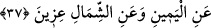
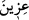

cerri, Hz. Osman’ın cem edip çoğalttığı Mushaf’a uyarak “ellezîne” kelimesine
bitiştirilmeden ayrı yazılmıştır.
Fethu’r-Rahmân’da ifâde olunduğuna göre “Kırâat imamlarından Ebû Amr bu kelime
üzerinde vakfedilebileceğini söyler. Bir başka kırâat imamı olan Kisâî, Ebû Amr’ın
aksine “lâm” üzerinde değil, “elif” üzerinde durulabileceği kanâatindedir. O, Nisa
sûresindeki “fe mâ li hâulâi”, Kehf sûresindeki “mâ li hâze’l-kitâbi”, Furkan
sûresindeki “mâ li hâze’r-Rasûli”, bu sûredeki “fe mâ lillezîne” âyetlerinde hep lam
üzerinde değil elif üzerinde vakfetmeyi uygun görmüştür. Onun dışındaki kırâat
imamları ise Kur’ân’ın orjinal nüshasının hattına uyarak Kisâî’nin aksine lam üzerinde
vakfetmişlerdir. İbn Atıyye şöyle der: “Bâzıları yukarıda sayılan âyetlerin hiçbirinde
lâm üzerinde durulmayacağını söylerler. Çünkü o bir harf-i cerdir ve mecrûrun bir
parçasıdır.” Tabiî bu söylediklerimizin tümü Kur’ân okuyan kişinin zarûret hâlinde
nefesi kesildiğinde nerede vakfedeceği konusundadır. Ama bir kişi, böyle bir durum
olmadığı hâlde bahsettiğimiz yerlerde durmak isterse bu mümkün değildir.”
“Sana doğru koşuyorlar;” yâni onlara ne oluyor ki senin etrafını çeviriyorlar. Âyette
yer alan “muhtı’îne” kelimesinin kökü “çabuk yapmak” anlamına gelir. Buna göre
âyetin mânâsı “onlara ne oluyor ki boyunlarını sana doğru uzatarak, gözlerini senin
tarafına doğru çevirerek hızla koşup geliyorlar?” şeklinde olur.
37. Bölük bölük sağından ve solundan (sana doğru koşuyorlar)
“__WORD__/Izîn” kelimesi, “dağınık dağınık” anlamınadır. Yâni bölük bölük, grup grup,
çeşitli fırkalar hâlinde halka oluşturarak.
“Izîn” kelimesi “ızetün” kelimesinin çoğuludur. Arapça’da “ızet” insan topluluğu
demektir. Bu kelimenin aslı, “azv” kökünden “ızvet”tir ki bu da herhangi bir kabileye
mensûbiyet ve intisab mânâsınadır. Burada âyette bu kelimeler seçilerek öyle bir tablo
oluşturuluyor ki Peygamber (s.a.) Efendimiz’e yaklaşan topluluklardan her biri bir
başka kabîleye mensupmuş gibi bir manzara ortaya çıkıyor. Bu mensubiyet ya başka bir
kavmin çocuğu olmak ya da başka bir kavme arka çıkmak şeklindedir. Şu hâlde onlar
kendi içlerinde dağılmış durumdadırlar.
Müşrikler Peygamber (s.a.)’in çevresinde ve bölük bölük bir dâire oluşturuyorlardı.
Onun söylemiş olduğu sözleri alaya alıyorlar ve diyorlardı ki: “Eğer bunlar, -
Muhammed’in dediği gibi- cennete girerlerse biz onlardan daha önce gireriz.” İşte bu
sözleri üzerine gelen âyet-i kerîme nâzil oldu: